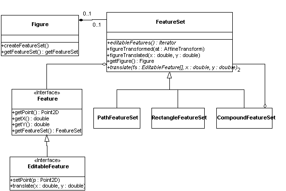

Feature sets
[Incomplete]The Figure interface defines a method, getFeatureSet(), that returns an object representing the abstract geometry of that figure. This method is a factory method, so that the geometry object is only created if this method is called, to reduce unnecessary object creation.

A geometry object is typically, but not always, owned by a figure, which is accessible through the getParentFigure() method. The geometry is defined by an instance of Shape, which is accessible through getShape() and setShape(). Figures that create an instance of a FeatureSet object should be sure to call setShape() with a new Shape whenever their shape changes.
When a geometry is changed (by a Feature -- see below), a figure that owns that geometry will need to be informed so that it can generate a repaint call. The protected method _repaint() is provided for this purpose -- figure that create a geometry should anonymously subclass a geometry class and override _repaint() to generate a repaint request.
There are several concrete subclasses of FeatureSet provided for use in the Diva canvas. RectangleFeatureSet represents geometries that are defined by a RectangularShape. PathFeatureSet represents a geometry defined by any Shape. CompoundFeatureSet is a geometry that is the union of two other geometries, and is typically used by a Figure class that wishes to add its own features to those of one of the existing geometry classes. Figure classes can also define their own subclasses of FeatureSet.
The main facility provided by FeatureSet is access to a set of features. A feature is an object that represents a single point location on a shape or figure. Features come in two flavors: unique and non-unique. A unique feature is one that uniquely exists on a shape -- examples include the corners of a rectangle and the vertices of a path. A non-unique feature is one of which there can be multiple instances. For example, a point on the circumference of an ellipse is non-unique, as there are arbitrary many points on the circumference.
The editableFeatures() method returns an enumeration over all the unique features of a geometry. translate() translate the given feature by the given distance, ignoring any features that are not in this geometry.
In the feature interface itself, the behavior of most of the methods is obvious from their names. translate() is expected to reshape the shape so that the given feature moves the given amount, and then call _repaint().